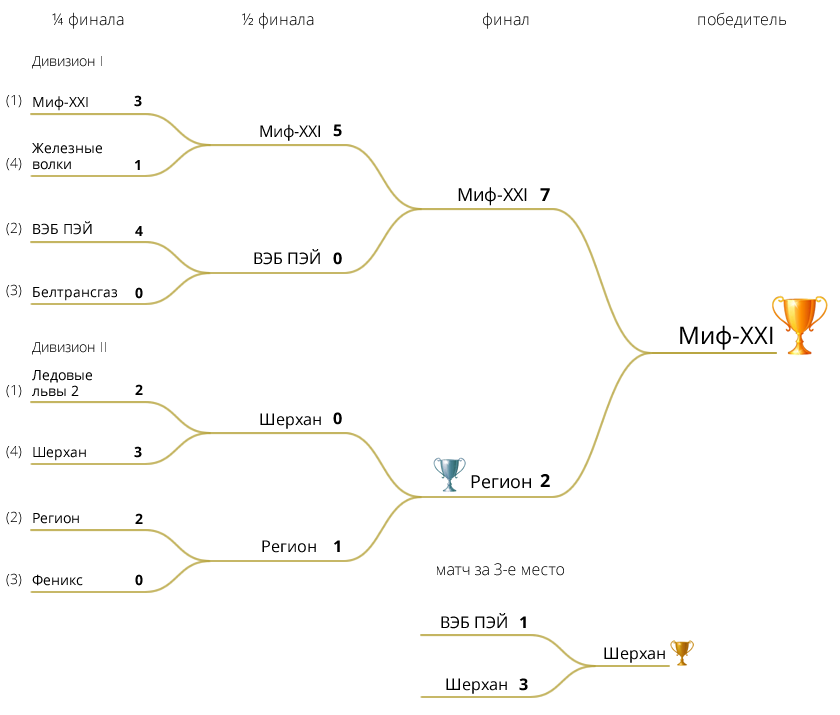

| № | КОМАНДА | И | В | ВО | П | ПО | Ш | О |
|---|---|---|---|---|---|---|---|---|
| 1 | МИФ-XXI | 19 | 17 | 1 | 1 | 0 | 95:17 | 53 |
| 2 | ВЕБ ПЭЙ | 19 | 13 | 1 | 5 | 0 | 74:33 | 41 |
| 3 | БЕЛТРАНСГАЗ | 19 | 8 | 3 | 7 | 1 | 46:42 | 31 |
| 4 | ЖЕЛЕЗНЫЕ ВОЛКИ | 19 | 9 | 0 | 7 | 3 | 54:56 | 30 |
| 5 | МИНСКИЕ МЕДВЕДИ | 19 | 5 | 4 | 10 | 0 | 38:38 | 23 |
| 6 | ДРАКОНЫ | 19 | 6 | 1 | 10 | 2 | 34:54 | 22 |
| 7 | ШТОРМ | 19 | 1 | 0 | 16 | 2 | 18:106 | 5 |
| № | КОМАНДА | И | В | ВО | П | ПО | Ш | О |
|---|---|---|---|---|---|---|---|---|
| 1 | ЛЕДОВЫЕ ЛЬВЫ-2 | 19 | 15 | 0 | 3 | 1 | 77:29 | 46 |
| 2 | РЕГИОН | 19 | 12 | 0 | 4 | 3 | 60:40 | 39 |
| 3 | ФЕНИКС | 19 | 9 | 5 | 5 | 0 | 63:37 | 37 |
| 4 | ШЕРХАН | 19 | 11 | 1 | 7 | 0 | 52:42 | 35 |
| 5 | БИЗОНЫ | 19 | 6 | 1 | 10 | 2 | 46:53 | 22 |
| 6 | ВИКИНГ-99 | 19 | 2 | 0 | 13 | 4 | 19:59 | 10 |
| 7 | ДИНАМИТ | 19 | 1 | 1 | 17 | 0 | 27:97 | 5 |
Примечание:
И — игры,
В — выигрыши в основное время,
ВО — выигрыши в овертайме (или по буллитам),
П — поражения в основное время,
ПО — поражения в овертайме (или по буллитам),
Ш — шайбы (забито / пропущено),
О — очки.

Лучший вратарь — Алексей Гриценко
Лучший защитник — Игорь Коновалов (Регион)
Лучший нападающий — Александр Липик (Шерхан)
Лучший бомбардир — Виталий Боровик (Миф-XXI)
| Имя | Фамилия | Команда | Шайбы | Передачи | Очки | |
|---|---|---|---|---|---|---|
| 1. | Виталий | Боровик | Миф-XXI | 14 | 21 | 35 |
| 2. | Александр | Липик | Шерхан | 25 | 9 | 34 |
| 3. | Валерий | Билан | Миф-XXI | 18 | 15 | 33 |
| 4. | Сергей | Тарасевич | Ледовые Львы-2 | 11 | 15 | 26 |
| 5. | Алексей | Барташевич | Миф-XXI | 19 | 6 | 25 |
| 6. | Игорь | Трубицын | Бизоны | 19 | 6 | 25 |
| 7. | Андрей | Анпилогов | ВЕБ ПЭЙ | 10 | 14 | 24 |
| 8. | Алексей | Богданович | Феникс | 19 | 4 | 23 |
| 9. | Валерий | Бабич | ВЕБ ПЭЙ | 9 | 14 | 23 |
| 10. | Сергей | Протас | Регион | 13 | 9 | 22 |